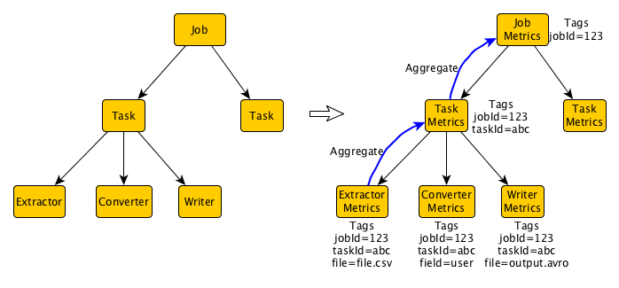

Table of Contents
Long running, complex applications are prone to operational issues. Good instrumentation, monitoring, and accessible historical information on its execution helps diagnose them, and many times even prevent them. For Gobblin ingestion, we wanted to add this instrumentation to all parts of the application. Some of the requirements we had were:
- Report progress of the ingestion processing for each job, task, and module. Many reports would be almost identical, just covering different instances of the same module.
- Report major milestones in the processing: when a Gobblin job starts, when the ingestion of a dataset finishes, when files of a dataset get committed, etc.
- Provide various levels of granularity: totals aggregations give a quick view of the performance of the application, but detailed, instance level reports are essential for debugging.
- Easily switch between sinks where reports and events are emitted.
- Generate queriable reports.
Gobblin Metrics is a metrics library, which is based on Dropwizard Metrics but extends it considerably to provide all the amazing features that make monitoring and execution auditing easy. The library is designed for modular applications: the application is a set of module instances, organized hierarchically. Following this pattern, the metrics library uses Metric Contexts organized hierarchically to instrument instances of classes and modules (see figure below for an example of this hierarchy for Gobblin ingestion). Each metric context in the tree contains a set of tags describing the context where particular metrics are being collected. Children in this tree automatically inherit the tags of their parents, giving a rich description of each instrumented object in the application. Of course, Gobblin Metrics is not limited to this kind of applications; we have taken advantage of all the other features of the library in much flatter programs.

Each metric context manages a set of metrics (like counters, timers, meters, and histograms), providing information for instance on the throughput for each reader and writer, serialization/deserialization times, etc. Metrics are automatically aggregated in the metric context tree: for example, while each writer is computing is throughput independently, we are also computing in real-time the throughput across each task (containing many writers) and each job (containing many tasks).
Gobblin Metrics also introduces the concept of events. Events are fire-and-forget reports of milestones of the execution, enriched by metadata relevant to that milestone, plus all of the context information derived from tags. For example, every time we finish processing a file, we emit an event cotaining detailed information like the number of records read, number of records written, and the location where the file was published. The events can be used to get historical information on previous executions, as well as detect and report failures.
Finally, the library would not be complete without options to actually export metrics and events to external sinks. Following Dropwizard Metric's model, we use Reporters to write out metrics and events. A few sinks are implemented by default, which we already use heavily: Kafka, OutputStream, Graphite, and InfluxDB. However, any developer can easily implement their own sinks. There is already logic to publish metrics and events as Avro records. Combining this with Hive / Pig, or any other data query engine, allows users to easily generate reports about the execution of their application. In the future we plan to follow the model of Log4j, using configuration files rather than hard coded reporters for metric reporting, which will permit users to quickly change their sinks as well as precisely which metrics and events get reported without touching code.
To learn more about Gobblin Metrics, check out the Wiki and the Gobblin project in Github.